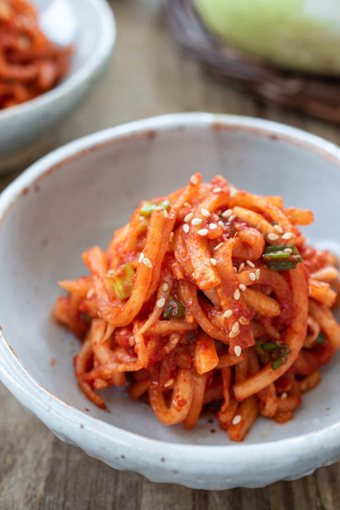

In late fall, Korean radishes taste really sweet, juicy, and crunchy. Korean radish is a variety of white radish, which has firm crisp flesh and a slightly sweet and peppery taste. It's similar to daikon, a Japanese variety, but quite different in texture and taste. However, you can use daikon if Korean radish is not available in your area.
There are several variations of Korean radish salads, such as non-spicy, sweet and sour radish salad. This spicy version is a more common variation.